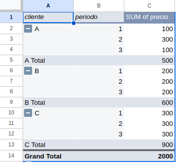
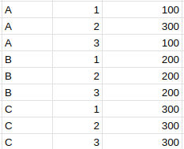

Introducción a las Tablas Dinámicas en Excel
Las tablas dinámicas en Excel las verás una y otra vez si trabajas con este programa. Es una herramienta interactiva para explorar tablas de datos, especialmente cuando esta exploración está relacionada con la operación de agrupación —el GROUP BY de SQL.
Cuando lees acerca de tablas dinámicas en Excel, la referencia suele ser la propia herramienta, disponible en el botón Tabla dinámica o Pivot table (si lo tienes en inglés). Ahora bien, puedes ver las tablas dinámicas como un concepto, no como una herramienta. Este concepto es lo que estará vinculado a esa operación de SQL. Y en este artículo verás cómo aplicar este concepto en Excel, haciendo de tus agregaciones de datos algo mucho más robusto que lo que consigues con las tablas dinámicas al uso.
¿Qué es una Tabla Dinámica?
Lo dicho. Una tabla dinámica es una característica de Excel que con la que puedes reorganizar, resumir y analizar datos sin necesidad de modificar la tabla de datos originales. Ahora bien, no siempre buscas esa capacidad de interactividad que te da la tabla dinámica, sino que buscas construir tablas resumen que sean robustas y estables.
¿Qué quiero decir con esto?
Pues que cuando crees una tabla dinámica, Excel empieza a darte problemas si la amplias y hay datos cerca, porque no sabe pisarlos. Y también, si acumulas muchas tablas dinámicas, el archivo empezará a ir lento porque pesa demasiado.
Así que el objetivo de este artículo es que veas la operación que haces con tablas dinámicas con una perspectiva más amplia.
Beneficios de Usar Tablas Dinámicas
Pero antes, voy a lo clásico. Las tablas dinámicas ofrecen muchos beneficios:
- Facilidad de uso: Permiten resumir datos complejos con simples arrastrar y soltar.
- Flexibilidad: Pueden adaptarse a diferentes tipos de análisis.
- Eficiencia: Ahorran tiempo al automatizar el proceso de análisis de datos.
En resumen, su interactividad te ayuda a explorar datos de manera ágil.
Cómo Crear una Tabla Dinámica en Excel (modo estándar)
Como el objetivo de las tablas dinámicas es explorar datos de manera interactiva, podrás conseguirlo en la mayoría de casos tan solo pulsando unos botones o arrastrando algún elemento —sin recurrir a fórmulas.
Paso a Paso para Crear una Tabla Dinámica
- Selecciona tus datos: Asegúrate de que tus datos estén en un formato tabular con encabezados claros, porque los vas a usar luego.
- Inserta una tabla dinámica: Ve a la pestaña Insertar (Insert) y selecciona “Tabla Dinámica” (o Pivot Table en inglés).
- Configura tu tabla: Arrastra y suelta los campos en las áreas de filas, columnas, valores y filtros según tus necesidades.
Vale, a ver, para ahí. Esto de arrastrar no es tan fácil. Tiene su técnica. Tienes dos formas de aprenderla:
- O bien te haces una asignatura de algún Máster o carrera universitaria sobre gestión de bases de datos, o bien
- haces prueba y error hasta que te salga algo que te encaje.
Lo primero sería lo ideal, pero no lo vas a hacer (ni siquiera tiene por qué salir bien, dado que hay muchos profesores muy malos que no saben explicar nada). Lo malo de lo segundo es que puedes incurrir en malas prácticas que te persigan luego en el futuro, y cuyos problemas ves sobre todo cuando tu volumen de datos empieza a crecer (los cálculos van lentos, pierdes datos por limitaciones de Excel, etc).
Como término medio, te recomiendo la siguiente forma de pensar.
Concepto de Observaciones, Individuos y Métricas
Cuando tienes una tabla, normalmente piensas en filas y columnas. Para una tabla eso está bien, pero para ti como analista debes tener claro su sentido de negocio. ¿Qué representa una fila?
Por ejemplo, si estás en un proyecto de fidelización de clientes, y quieres saber cuáles de tus clientes son más propensos a la fuga (a darse de baja), las filas de tu tabla serán tus clientes. Podemos decir que las filas representan individuos. Las columnas serán información sobre los clientes. En términos generales, podrías decir que son métricas de los clientes (la edad, años en tu empresa, etc) (habría que matizar más, entrando en los conceptos de dimensiones y hechos, pero no me hace falta para esto).
Ahora imagina que estás midiendo otra cosa. Por ejemplo, el valor de cada cliente a lo largo del tiempo. De una manera reduccionista, vamos a decir que el valor de cada cliente es el precio del producto que tienen contratado en ese momento (en proyectos de valor de cliente a veces se tiene en cuenta una previsión de lo que gastarán en el futuro). Aquí puedes plantear tu tabla de dos formas. Cada fila vendrá representada por un cliente, un individuo, y las columnas tomarán el valor de la métrica (precio del producto) periodo de tiempo a periodo de tiempo (por ejemplo, año a año) y tendrás tantas columnas como periodos de tiempo; o podrías poner las filas representando a cada par cliente-año, de forma que cada fila es una observación. Las filas han dejado de ser los individuos (los clientes) y ahora son observaciones.
En función del tipo de análisis que quieras hacer, te vendrá mejor una forma u otra. Es importante que uses las tablas dinámicas para pasar de un formato a otro con agilidad.
En la sección Filas tendrás que poner las columnas que identifican precisamente estas filas. En el primero ejemplo, solo los clientes irían en Filas, pero en el segundo pondrías tanto la columna cliente como la columna periodo.
En función de eso, el apartado Columnas también se verá afectado: en el segundo caso no pondrás nada; en el primero, pondrás periodo.
En cualquiera de los dos casos, en Valores pondrás el precio sumado, para saber el total de gasto de cada cliente en cada periodo sumando todos sus productos.

Selección de Datos para la Tabla Dinámica
Es crucial seleccionar adecuadamente los datos que vas a usar en tu tabla dinámica. Asegúrate de que los datos estén organizados en columnas con encabezados claros.
La fuente de datos debería seguir los 13 mandamientos que enuncié hace dos años sobre almacenamiento de datos en Excel.
En algunos casos que no se sigan te podrías apañar, pero te pueden servir como una normal general para facilitar el trabajo.
Diseño y Formato de Tablas Dinámicas
Una vez creada tu tabla dinámica, puedes personalizar su diseño y formato para que se ajuste a tus necesidades. Puedes cambiar colores y estilos, pero eso es una tontería.
Lo importante es que cambies el diseño relacionado con explorar tus datos. Por ejemplo, cas siempre repito las etiquetas de las filas. Como has visto en la imagen anterior, las etiquetas de la columna cliente solo aparecían en la primera fila de cada grupo. Eso puede parecerte muy limpio y muy mono, quizá útil para un informe. Pero para analizar datos es un horror: un análisis estadístico necesita filas completas, sin valores vacíos, y el analista no debería verse obligado a asumir que los datos cada fila son los mismos de la anterior.
Así que, puesto que mis tablas están orientadas a su análisis, y no a usarlas como informes, siempre pongo todas las etiquetas de filas y, además, elimino subtotales. Esto es importante por lo mencionado en el epígrafe anterior, de que las filas son observaciones o individuos, pero nunca puedes mezclar tipos de filas en una misma tabla.

Funciones Avanzadas de las Tablas Dinámicas
Además de las funciones básicas, las tablas dinámicas en Excel ofrecen varias características avanzadas que pueden mejorar significativamente tu análisis de datos.
Segmentación y Filtro de Datos
En los elementos que tienes para editar la tabla dinámica, he mencionado ya las filas, las columnas y los valores. Falta uno: los filtros. Y me dirás:
¿Para qué voy a usar filtros de una tabla dinámica si ya tengo los filtros de las tablas normales?
Recuerda el objetivo de las tablas dinámicas: explorar datos de manera interactiva. Si tienes que volver a la fuente de datos cada vez que quieras hacer un filtro, pierdes poder en esa interactividad. Así deja la fuente de datos como está y filtra en la opción de la tabla dinámica. Esto es muy importante por una cosa que te contaré más adelante.
Campos Calculados en Tablas Dinámicas
A veces necesitarás calcular pasos previos en la tabla dinámica y luego, con las columnas calculadas, querrás hacer una nueva operación. Eso es muy frecuente ver cómo algunas personas hacen el cálculo final fuera de la tabla dinámica, cuando realmente puedes usar las herramientas de las tablas dinámicas para incluir.
Concretamente, los campos calculados te ayudan a hacer fórmulas sobre columnas que calcula la tabla dinámica. En la siguiente imagen verás un campo calculado que consiste en la división de las dos columnas que ha calculado la tabla dinámica (la que es suma de precio entre la que es media de valoración). En la imagen te he añadido la suma y la media para que veas el cálculo, pero ni siquiera hace falta que lo pongas: en la fórmula especificas cómo se calcula la media y la suma y así no cargas la tabla de cálculos auxiliares (importante por la parte de optimización de la que hablaré luego).

Valores como Columnas o como Filas
Esto no sé si lo tiene Excel, pero sí lo tiene Google Drive. Es súper potente. Tiene de nuevo mucha relación con lo que te explicaba arriba sobre las observaciones y los individuos. En las tablas dinámicas de Google Sheets tienes una opción en la selección de Valores que te permite indicar si los quieres por filas o columnas.
Si los quieres por columnas, te quedará algo así:
| col1 | métrica 1 | métrica 2 |
|---|---|---|
| A | 25 | 1040 |
| B | 35 | 2130 |
| C | 43 | 960 |
Si los quieres por filas, te quedará esto:
| col1 | métrica | valor |
|---|---|---|
| A | métrica 1 | 25 |
| A | métrica 2 | 1040 |
| B | métrica 1 | 35 |
| B | métrica 2 | 2130 |
| C | métrica 1 | 43 |
| C | métrica 2 | 960 |
¿Y esto por qué es tan potente? Pues porque cambiar esa estructura de tablas te vendrá muy bien en función de la situación en la que estés. El formato uno se dice que tiene los datos en formato ancho. ¿Qué es el formato ancho? Imagina que en lugar de 2 métricas tienes 100; entonces tendrás 101 columnas en tu tabla; sin embargo, filas tendrás solo 3 porque no tienes más datos. Así que será una tabla muy ancha.
El otro formato, el segundo, se llama formato largo. ¿En qué se diferencia el formato largo del formato ancho? En que el largo tendrá muchas filas. En el largo, las filas son observaciones, en el sentido de que cada fila representa el valor de una métrica y un individuo. En el formato ancho, las filas son individuos, en el sentido de que en una sola fila tienes todas sus observaciones (todas sus métricas).
¿Y para qué se usan el formato ancho y el formato largo?
- El formato ancho es típico en estadística: tienes muchas métricas y cada una es una columna. Y explicarás unas columnas en función de otras, y las relacionarás. El formato ancho también lo usarás mucho en Excel para visualizar.
- El formato largo es más adecuado para almacenar datos porque, aunque te añadan columnas nuevas, la estructura de la tabla (es decir, sus columnas) será la misma. Eso lo hace muy útil para las bases de datos.
Así que, como usuario de Excel, en ocasiones te verás extrayendo datos de bases de datos en formato largo y tendrás que pasarlos a formato ancho. Ahora ya sabes hacerlo.
Optimización de Tablas Dinámicas
Para sacar el máximo provecho de las tablas dinámicas es importante optimizarlas adecuadamente.
Uso de Tablas Dinámicas para Análisis de Datos
Las tablas dinámicas son ideales para el análisis de grandes volúmenes de datos. Pueden ayudarte a identificar tendencias, patrones y anomalías en tus datos.
Actualización Automática de Tablas Dinámicas
Puedes configurar tu tabla dinámica para que se actualice automáticamente cada vez que cambien los datos de origen, asegurando que siempre trabajes con la información más reciente.
Mejoras en el Rendimiento de las Tablas Dinámicas
Para mejorar el rendimiento de tus tablas dinámicas, asegúrate de:
- Reducir la cantidad de datos: Trabaja solo con los datos necesarios.
- Desactivar la actualización automática: Si no es necesaria, esto puede acelerar el rendimiento.
- Optimizar los cálculos: Utiliza fórmulas y funciones eficientes.
Errores Comunes y Cómo Solucionarlos
Trabajar con tablas dinámicas puede presentar algunos desafíos. A continuación, se detallan algunos errores comunes y sus soluciones.
Errores de Referencia en Tablas Dinámicas
Estos errores ocurren cuando los datos de origen han cambiado o se han movido. Asegúrate de actualizar el rango de datos de origen regularmente.
Problemas de Actualización de Datos
Si tu tabla dinámica no se actualiza correctamente, verifica que el rango de datos de origen sea correcto y que no haya celdas vacías o errores en los datos.
Solapamiento de tablas
En relación con lo anterior, es común que tengas varias tablas y cálculos en una misma pestaña en la que ya hay una tabla dinámica. Cuando quieras actualizar esta tabla, si le añades filas o columnas es posible que te toque pisar los otros cálculos que tengas en esa pestaña. Eso te dará error y tendrás que mover el resto de cálculos, que te puede descolocar bastante, para poder seguir trabajando con tu tabla dinámica.
La solución puede ser que intentes no tener más cálculos en la pestaña de la tabla dinámica (intenta hacerlos todos con campos calculados); o mejor, lee lo que te voy a contar un poco más abajo sobre alternativas a las tablas dinámicas.
Solución de Errores en Campos Calculados
Los errores en los campos calculados suelen deberse a fórmulas incorrectas. Revisa y corrige las fórmulas. Una cosa que puedes hacer es mostrar todas las columnas auxiliares en una versión preliminar, y calcular el campo calculado fuera de la tabla dinámica, a mano con fórmulas de Excel. Cuando identifiques el problema, podrás quitar todas esas columnas auxiliares para que te quede más limpio el trabajo.
Alternativas a las tablas dinámicas
Las tablas dinámicas están muy bien por tu interactividad pero son pesadas y lentas cuando hay muchos datos. Además te dan poca versatilidad cuando hay otros cálculos alrededor.
Una alternativa es que las construyas tú con fórmulas.
Mira, te enseño primero los datos de partida:

Y a partir de ellos, he creado esta tabla:

La tabla la podrías construir fácilmente con una tabla dinámica, pero te dará mucho más control hacerlo con fórmulas. Concretamente, he usado:
- Para las dos primeras columnas, he puesto
=UNIQUE(A2:B14). Fíjate en que, una vez pones eso en una sola celda, te completa todo el rango inferior, con todos los datos. Es una fórmula especial y no hay que arrastrarla. De hecho, si cambias los datos de partida se actualizará sola. Idealmente, no especificarías que vas desde la fila 2 hasta la 14 de la B. Pero eso es un nivel más avanzado que trataré en otro post (sobre la funciónOFFSET()/DESREF()). - La tercera columna está hecha con
=SUMIFS($C$2:$C$14,$A$2:$A$14,G3,$B$2:$B$14,H3). Ahí sí hay que arrastrar y, de nuevo, si metieras más filas te datos, tendrías que adaptar la fórmula (o mejorarla conDESREF()/OFFSET()como haré en otro post). Pero es un primer paso adecuado para que veas que hay alternativas a las tablas dinámicas basadas en fórmulas.
Ejemplos Prácticos de Tablas Dinámicas en Excel
Los siguientes ejemplos prácticos muestran cómo las tablas dinámicas pueden utilizarse en diferentes contextos.
Análisis de Ventas con Tablas Dinámicas
Las tablas dinámicas son ideales para analizar datos de ventas. Puedes resumir las ventas por producto, región, período de tiempo y más.
Control de Inventarios con Tablas Dinámicas
Utiliza tablas dinámicas para gestionar y analizar el inventario. Puedes monitorear niveles de stock, identificar productos de alta rotación y prever necesidades de reabastecimiento.
Reportes Financieros con Tablas Dinámicas
Las tablas dinámicas permiten crear reportes financieros detallados, como estados de resultados y balances generales, de manera eficiente y precisa.
Consejos y Trucos para Tablas Dinámicas en Excel
Algunos consejos y trucos pueden ayudarte a aprovechar al máximo las tablas dinámicas en Excel.
Atajos de Teclado Útiles
Los atajos de teclado pueden acelerar tu trabajo con tablas dinámicas. Por ejemplo:
Alt + N + V: Inserta una nueva tabla dinámica. Alt + JY + A: Actualiza la tabla dinámica.
Personalización de Tablas Dinámicas
Personaliza tus tablas dinámicas para que se ajusten a tus necesidades específicas. Cambia el diseño, agrega estilos y utiliza colores para destacar datos importantes.
Integración con Otras Herramientas de Excel
Las tablas dinámicas pueden integrarse con otras herramientas de Excel, como Power Query y Power Pivot, para análisis de datos más avanzados. es más, puedes usarlas para analizar datos de ficheros externos como CSV o bases de datos, incluso cuando las tablas originales no quepan en Excel. Recuerda que Excel tiene un límite de 1 millón de filas y unas cuantas columnas. Si lo superas al abrir una tabla normal en Excel, pierdes datos.
Pero si analizas esos datos con tablas dinámicas, podrás hacer operaciones como las vistas arriba usando toda la información.
Conclusión
Las tablas dinámicas en Excel son una herramienta esencial para el análisis de datos. Con esta guía, ahora tienes todos los conocimientos necesarios para crear, optimizar y solucionar problemas comunes de las tablas dinámicas en Excel. Aprovecha al máximo estas poderosas herramientas para mejorar tu eficiencia y precisión en el manejo de datos.
FAQs sobre Tablas Dinámicas en Excel
¿Qué hacer si mi tabla dinámica no se actualiza?
Verifica que el rango de datos de origen sea correcto y no contenga celdas vacías o errores.
¿Cómo puedo agregar más de un campo de datos en una tabla dinámica?
Arrastra y suelta los campos adicionales en las áreas de valores, filas o columnas según sea necesario.
¿Es posible usar tablas dinámicas con datos externos?
Sí, puedes conectar tablas dinámicas a fuentes de datos externas como bases de datos SQL, archivos CSV y más.
¿Cómo puedo filtrar datos en una tabla dinámica?
Utiliza los filtros y segmentaciones para seleccionar y mostrar únicamente los datos que te interesan.